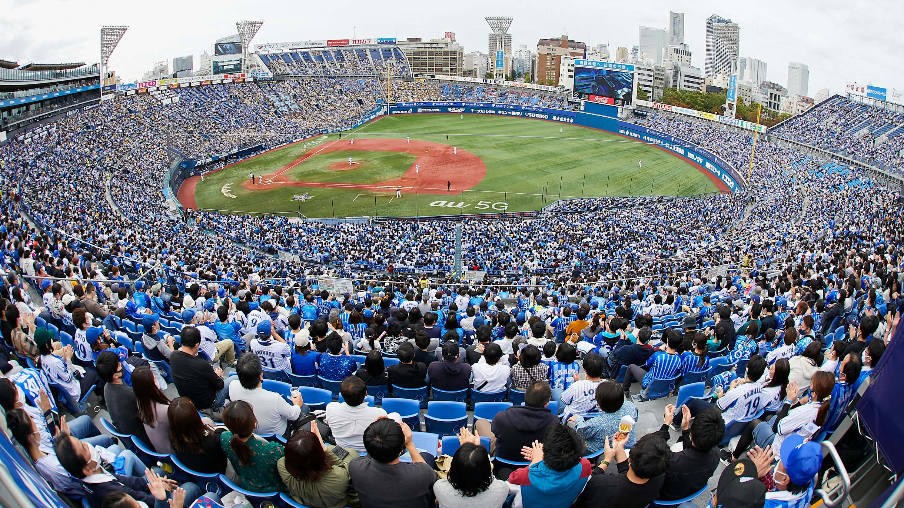

Несмотря на свое основное происхождение в Америке, огромнейшую популярность относительно количества населения бейсбол имеет в азиатских странах, в особенности в Японии.
К примеру, в Японии, где бейсбол, бесспорно, является ведущим командным видом спорта для зрителей, совокупный доход двенадцати команд Японского профессионального бейсбола (NPB) - организации, контролирующей Центральную и Тихоокеанскую лиги, - в 2007 году оценивался в 1 миллиард долларов. Общая посещаемость NPB за год составила около 20 миллионов человек.
Тайвань - это еще одно место, где бейсбол является одним из самых массовых видов спорта, истоки популярности там которого восходят к временам японского владычества.
К примеру, в Японии, где бейсбол, бесспорно, является ведущим командным видом спорта для зрителей, совокупный доход двенадцати команд Японского профессионального бейсбола (NPB) - организации, контролирующей Центральную и Тихоокеанскую лиги, - в 2007 году оценивался в 1 миллиард долларов. Общая посещаемость NPB за год составила около 20 миллионов человек.
Тайвань - это еще одно место, где бейсбол является одним из самых массовых видов спорта, истоки популярности там которого восходят к временам японского владычества.